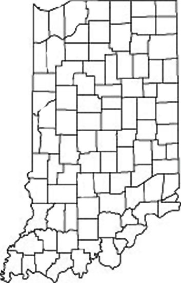
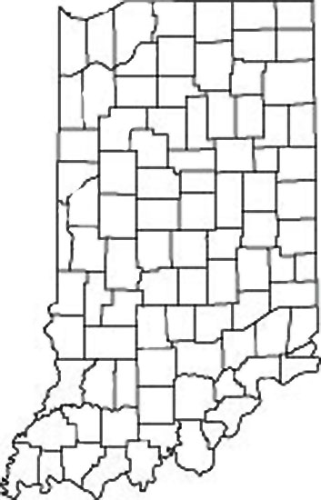

Find us on Twitter
Find us on TwitterIndiana
Click on a county or an area of the map to open a document describing agriculture and weather variability in that state region.
|  |

Farmer Decision Tools |
Click on a county or an area of the map to open a document describing agriculture and weather variability in that state region.
|  |
U.S. climate trends are impacting corn-based cropping systems and threatening agricultural investments. In response, farmers are seeking new ways to ensure continued crop productivity while also minimizing environmental impact.
SUSTAINABLECORN.ORG | Website Administrator
This material is based upon work that is supported by the National Institute of Food and
Agriculture, U.S. Department of Agriculture, under award number 2011-68002-30190
Any opinions, findings, conclusions, or recommendations expressed on this website are those of the author(s)
and do not necessarily reflect the view of the U.S. Department of Agriculture.